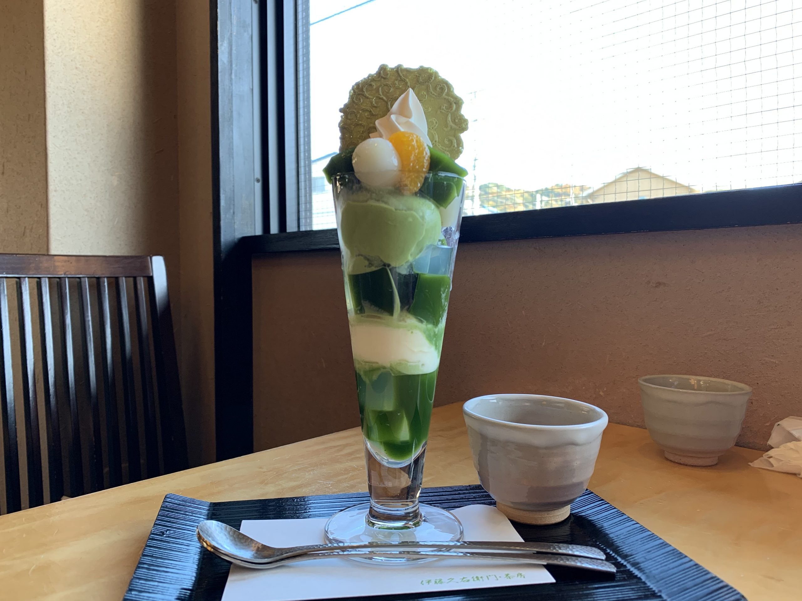

京都グルメ
伊藤久右衛門 宇治本店



平等院鳳凰堂で有名な宇治の名門茶屋で、宇治茶で有名。
抹茶を活かした食品の開発もされており、各種抹茶スイーツ、抹茶そば、抹茶カレーなどがある。
人気の抹茶パフェはあんこに、渋皮栗、抹茶アイス、白玉なども入っていて、贅沢で食べ応えがある。
住所: 〒611-0013
京都府宇治市莵道荒槙19-3
TEL: 0774-23-3955
詳細情報
Map
京のおばんざい処 六角や

こちらのお店のオススメは、お出汁にこだわったおばんざい。カツオやサバ節などからとった
特製のダシをを使用したおばんざいが、季節がわりで常時7～8種類ほど用意されています。
酒のつまみに最高です。
住所: 〒600-8217
京都府京都市下京区東境町172 ネオヒルズビル B1
TEL: 075-354-3789
詳細情報
Map
ページトップへ戻る